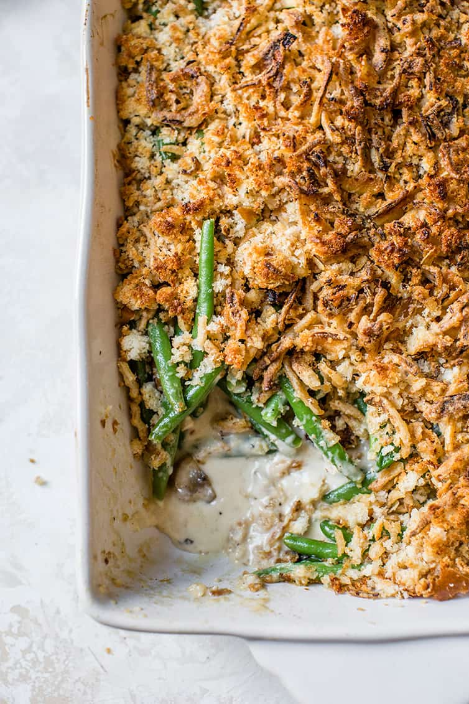

green bean casserole!

Description
This recipe is for green bean casserole which I personally think is pretty nasty. I don't even really know if I've eaten it before, but the vibe is off.
Ingredients
- Green beans
- Noodles?
- Like what else is in it?
- I don't know if you should put love in this one
Steps
- First string the green beans. That's important unless you're quirky and LOVE eating green bean strings. Maybe that's a thing I actually don't know
- You should mix the green beans and the noodles maybe? Put em together? Wait maybe cook them both first?
- I don't know howt his recipe is made.